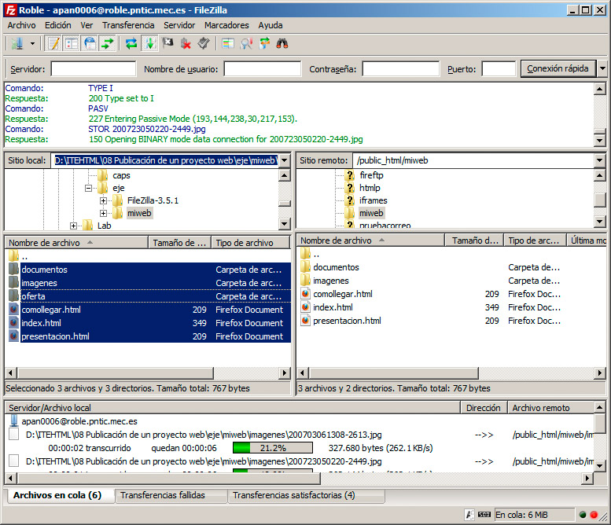
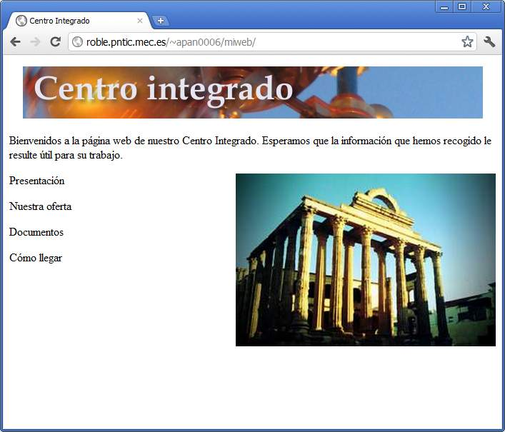
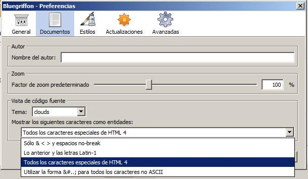

Se guarda un registro de la transferencia en el panel inferior, indicado por Transferencias fallidas y Transferencias satisfactorias. En fallidas no debería haber ningún archivo, si todo ha ido bien.
Al finalizar, tendremos en el servidor remoto una copia exacta del contenido de nuestro ordenador.

En este proceso sólo necesitaremos tener una precaución: la estructura de los archivos debe mantenerse exactamente igual que la local, es decir, si habíamos distribuido los archivos por carpetas, debemos mantener el mismo sistema.
Nota
No debemos olvidar que nuestra página principal debe llamarse index.htm o index.html, ya que ésa será la que se cargue automáticamente por parte del servidor, cuando alguien acceda a nuestro espacio.
En este punto ya podemos acceder al navegador e introducir la dirección correspondiente para ver nuestro espacio web. La dirección nos la facilita también el servicio de almacenamiento que estemos empleando. Observemos la figura:

Además del nombre del servidor, de algún modo suele aparecer el nombre de la cuenta o de la carpeta. En nuestro ejemplo, además, hemos añadido el nuevo contenido en una carpeta llamada miweb, para no mezclarlo con otros espacios ya creados en ese mismo servidor. Obviamente un mismo servidor puede contener tantos sitios web como necesitemos, con tan sólo distribuirlos en carpetas diferentes.
Enlaces relativos y absolutos
Si al comenzar a probar el sitio web, observamos que algún enlace no funciona o alguna imagen no se muestra, probablemente nos encontremos ante el conocido problema de las referencias relativas o absolutas, que ya tratamos en el apartado de los enlaces. Este problema lo notaremos especialmente al ver nuestra web en otro ordenador o al indicarle a otra persona que acceda a nuestra web. Esto es así porque, si hemos empleado referencias absolutas a archivos de nuestro propio ordenador, nosotros sí veremos correctamente los enlaces, pero el resto de las personas no, ya que no tienen una copia local de los archivos colocados exactamente igual que nosotros.
Si no se nos ha producido este problema, podemos felicitarnos porque prestamos la suficiente atención al crear cada enlace a otra página y al insertar imágenes. Si por el contrario nos encontramos con esta incidencia, debemos editar los enlaces erróneos y asegurarnos de que los convertimos en relativos a la página web en cuestión.
Una vez solventados los problemas, debemos llevar de nuevo los archivos al servidor remoto, sobrescribiendo los que allí se encuentren.
Gestión de archivos remotos
Filezilla nos sirve para hacer una gestión completa de los archivos del servidor. Podemos realizar múltiples operaciones sobre ellos, desde crear carpetas, eliminar archivos, moverlos, renombrarlos, etc. incluso cambiar sus permisos de acceso, como haríamos en cualquier ordenador con sistema Linux.
Cuando terminemos de trabajar con la aplicación, podemos cerrar el programa y dar por terminado el proceso. Nuestra página web ya ha sido creada.
Caracteres especiales
Por cuestiones relacionadas con el tipo de codificación de los documentos y las diferencias que puedan existir con el servidor, se nos puede dar el caso de que, al transferir un sitio web, observemos que las tildes no se muestran correctamente, las eñes y otros caracteres especiales.
Los motivos por los que esto sucede son complejos, pero no así la solución, que pasa por indicar en BlueGriffon que reemplace los caracteres especiales por códigos estandarizados en HTML. Esto se consigue seleccionando la opción Herramientas>Preferencias y posteriormente la pestaña Documentos.
En la parte denominada Mostrar los siguientes caracteres como entidades seleccionaremos la opción Todos los caracteres especiales de HTML 4, como se muestra en la figura:

Así se reemplazarán los caracteres especiales por códigos, que serán interpretados correctamente por el navegador.
Actividad 2
Nota
La dirección HTTP y la FPT:
Puedes haber observado que la dirección a la que subimos los archivos por FTP no es exactamente la misma que la que ponemos en la barra de direcciones del navegador, para ver nuestra página. En concreto, para realizar la transferencia de archivos por FTP usamos:
- servidor: nombre_de_servidor_FTP
- usuario: nombre_de_usuario
- contraseña: clave
Por ejemplo, en los servicios que nos presta el ITE para FTP los datos serían:
- servidor: acacia.pntic.mec.es
- usuario: nombre_de_ usuario
- contraseña: clave
Luego tendriamos que poner nuestros archivos dentro de la carpeta public_html.
Cuando vamos a la barrra de direcciones de nuestro navegador ponemos, en general:
http://nombre_de_servidor_HTML/nombre_de_usuario
Que en el caso de nuestro ejemplo de usuario del ITE es:
http://acacia.pntic.mec.es/nombre_de_usuario
Pregunta Verdadero-Falso
Verdadero Falso
Verdadero Falso